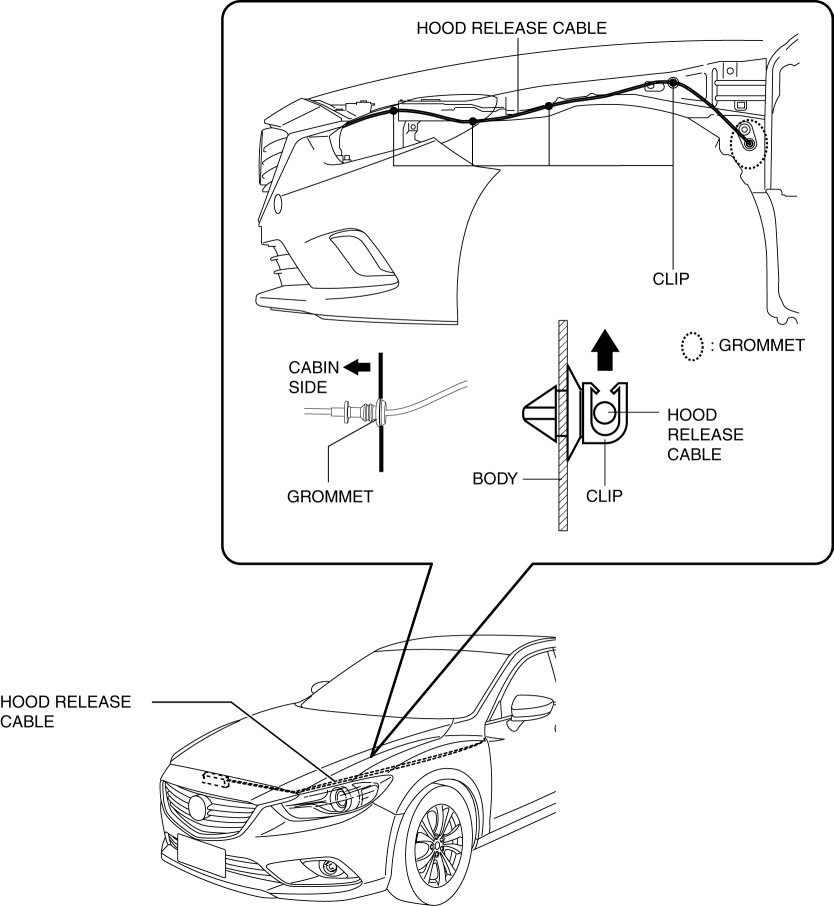

< Previous
Next >
2014 -
Mazda6 -
Body and Accessories
HOOD RELEASE CABLE REMOVAL/INSTALLATION
1. Disconnect the negative battery cable. (See NEGATIVE BATTERY CABLE DISCONNECTION/CONNECTION [SKYACTIV-G 2.5].)
2. Remove the following parts: a. Front bumper (See FRONT BUMPER REMOVAL/INSTALLATION.)
b. Front combination light (See FRONT COMBINATION LIGHT REMOVAL/INSTALLATION.)
c. Shroud upper member (See SHROUD UPPER MEMBER REMOVAL/INSTALLATION.)
d. Front mudguard (Driver's side) (See MUDGUARD REMOVAL/INSTALLATION.)
e. Hood release lever (See HOOD LATCH AND RELEASE LEVER REMOVAL/INSTALLATION.)
3. Disconnect the hood release cable from the hood latch.
4. Remove the hood release cable from clip.

5. Press the grommet into the cabin side.
6. Remove the hood release cable from the cabin side.
7. Install in the reverse order of removal.
< Previous
Next >
© 2012 Mazda North American Operations, U.S.A.